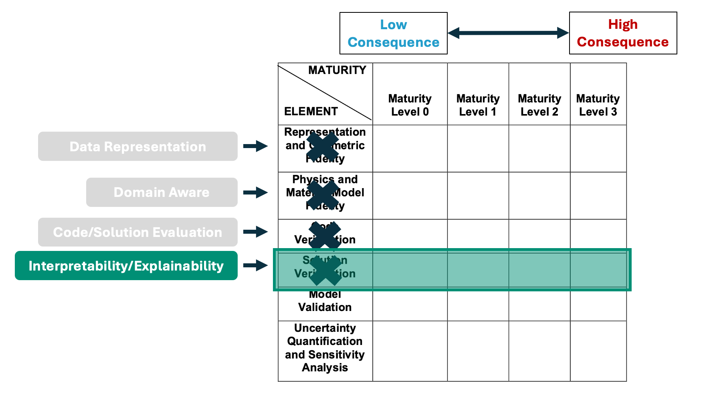

Katherine Goode
Home
Papers
Presentations
Software
Presentations
Evaluating the Maturity Level of Scientific Machine Learning Explainability
Poster presented at CoDA 2025
Feb 26, 2025

A framework for evaluating the maturity level of machine learning explanations
Talk given at JSM 2024
Aug 6, 2024
Characterizing climate pathways using echo state networks and feature importance
Talk given at WNAR in Fort Collins, CO
Jun 11, 2024
Characterizing climate pathways using echo state networks and feature importance
Talk given for the statistics department seminar at Montana State University.
Apr 3, 2024
Characterizing climate pathways using feature importance on echo state networks
Talk given for the annual meeting of the Albuquerque Chapter of the ASA in Santa Fe, New Mexico.
Sep 29, 2023
Characterizing climate pathways using feature importance on echo state networks
Talk given at JSM in Toronto, Canada in the topic-contributed session ‘Deep learning for climate change: forecasts, mitigation, and adaption’
Aug 8, 2023
Feature Importance with Deep Echo State Models
Talk given at SIAM-GS in Bergen, Norway.
Jun 22, 2023
Tracing Trees: Visualizing Random Forest Tree Variability with Trace Plots
Talk given at Sandia National Labs.
Jul 11, 2022
WhoseEgg: A Shiny App for Identifying Invasive Carp Using Random Forests and Fish Egg Characteristics
Talk given to the ISU LunchinatoRs.
Apr 16, 2021
Tracing Trees: Visualizing Variability in the Architecture of Random Forest Trees Using Extensions of Trace Plots
Talk for ISU Graphics Group.
Apr 1, 2021
WhoseEgg: A Shiny App for Identifying Invasive Carp Using Random Forests and Fish Egg Characteristics
Talk for ISU Graphics Group.
Feb 25, 2021
Explaining Black Box Machine Learning Models
Talk given to the ACS Data Analytics team at Autodesk.
Nov 20, 2020
The Delta Method and Applications to Mark Recapture Models
Talk for Bob Klaver’s ISU Ecology 607 class.
Nov 16, 2020
Explaining Neural Networks with Functional Data Using PCA and Feature Importance
Talk for AAAI 2020 Fall Symposium on AI in the Government and Public Sector
Nov 14, 2020
A Statistical Consultant’s Perspective on Getting Help with R
Talk given with AES Statistical Consultants (Haoyan Hu, Miranda Tilton, and Yudi Zhang) at ISU LunchinatoRs
Oct 2, 2020
Explaining Neural Network Predictions for Functional Data Using Principal Component Analysis and Feature Importance
Talk for ISU graphics group
Sep 24, 2020
An Overview of Visualization Techniques for Explainable Machine Learning
Talk for ISU graphics group
Apr 10, 2020
Visual Diagnostics of a Model Explainer: Tools for the Assessment of LIME Explanations
Talk given to the statistics department at Sandia National Laboratories
Dec 3, 2019
gganimate (with a spooky twist)
Talk for ISU graphics group
Oct 31, 2019
ggResidpanel: Easy Creation of Panels of Diagnostics Plots
Presentation for ISU lunchinatoRs
Oct 4, 2019
Visual Diagnostics of a Model Explainer: Tools for the Assessment of LIME Explanations from Random Forests
Speed presentation and e-poster for JSM 2019
Jul 29, 2019
A Review and Discussion of Residuals for Mixed Models
Talk for NCCC-170 meeting 2019
Jun 20, 2019
Using LIME to Interpret a Random Forest Model with an Application to Bullet Matching Data
Poster for Midwest Statistical Machine Learning Colloquium
May 13, 2019
An Application of LIME to a Random Forest Model
Talk for ISU graphics group
Mar 1, 2019
Introducing ggResidpanel: An R Package for Easy Visualization of Residuals
Talk for ISU graphics group with Katie Rey
Oct 12, 2018
Introducing ggResidpanel: An R Package for Easy Visualization of Residuals
Poster for Kansas State University Conference on Applied Statistics in Agriculture presented with Katie Rey
May 8, 2018
Interpreting Predictions from Black Box Models with LIME
Talk for ISU graphics group
Nov 9, 2017
No matching items